Module 1 — Neural Networks with PyTorch
Class 02
Neurons, layers, weights, activations — the building blocks inside the black box
The training loop that powers every AI model — from a simple classifier to GPT
The toolkit that turns the math into working code — tensors, autograd, and GPU acceleration
Tensor operations, automatic gradients, and the 5 sacred lines that train any model
From single neurons to layered architectures
A neural network is a learnable function — it takes inputs, produces outputs, and discovers the mapping between them from data. Instead of writing rules by hand, you let the network find patterns by adjusting its internal parameters.
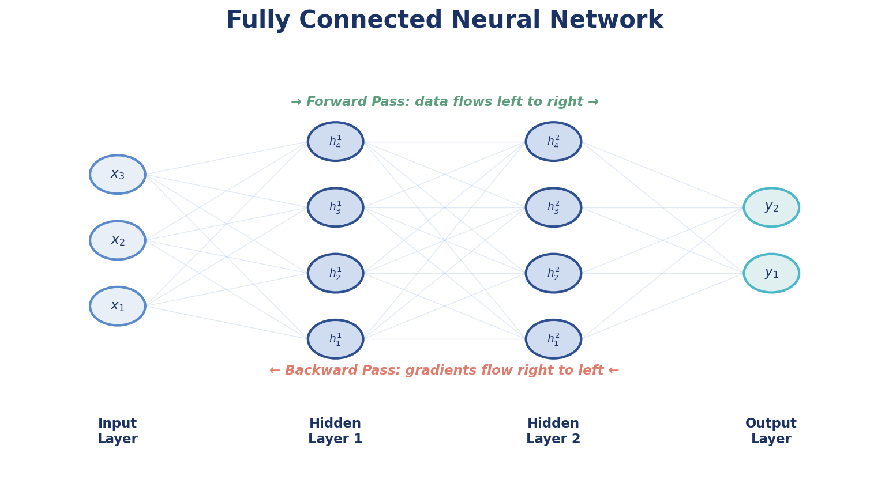
Data flows left to right through layers of neurons. Each connection carries a learnable weight. The network transforms raw inputs into meaningful predictions.
A single neuron (perceptron) can only learn linear boundaries — straight lines through data. By stacking neurons into layers and adding activation functions, you get a Multi-Layer Perceptron (MLP) that can learn complex, nonlinear patterns.
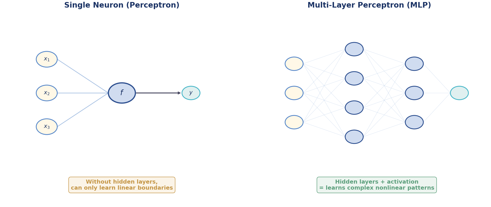
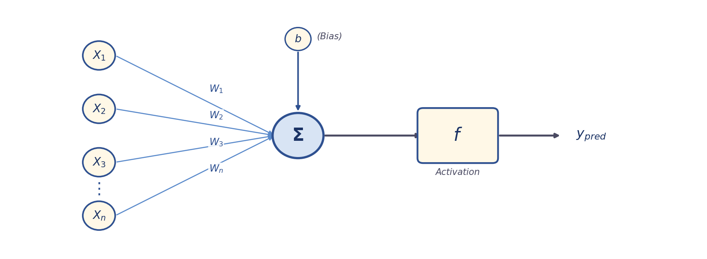
Each input $X_i$ is multiplied by a learnable weight $W_i$. Weights control how much each input matters.
All weighted inputs are summed, then a bias $b$ is added. The bias shifts the decision boundary.
The activation function introduces nonlinearity — without it, the neuron is just a linear equation.
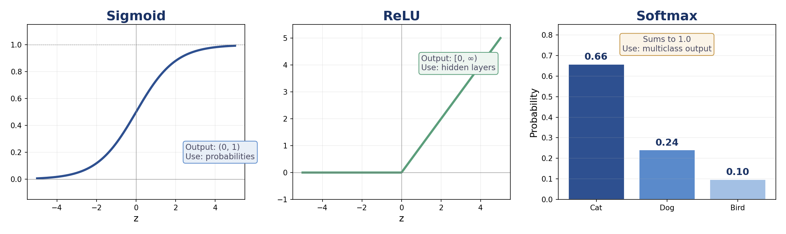
Output: (0, 1)
Use: Probabilities, binary output
Output: [0, +∞)
Use: Hidden layers (default choice)
Output: Sums to 1
Use: Multiclass output layer
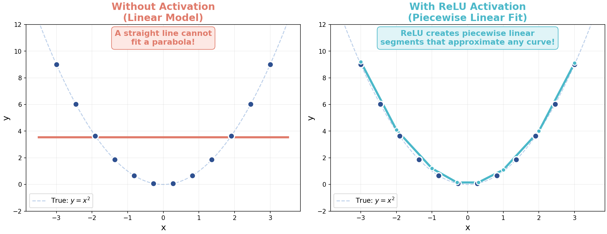
The model discovers these by learning from data. You never set them manually.
The training loop, loss functions, and gradient descent
Every neural network learns by repeating this cycle. Here's the concept — and the code that implements it:
for epoch in range(num_epochs): for batch in dataloader: # ① Forward pass pred = model(inputs) # ② Compute loss loss = criterion(pred, targets) # ③ Backward pass loss.backward() # ④ Update weights optimizer.step() optimizer.zero_grad()
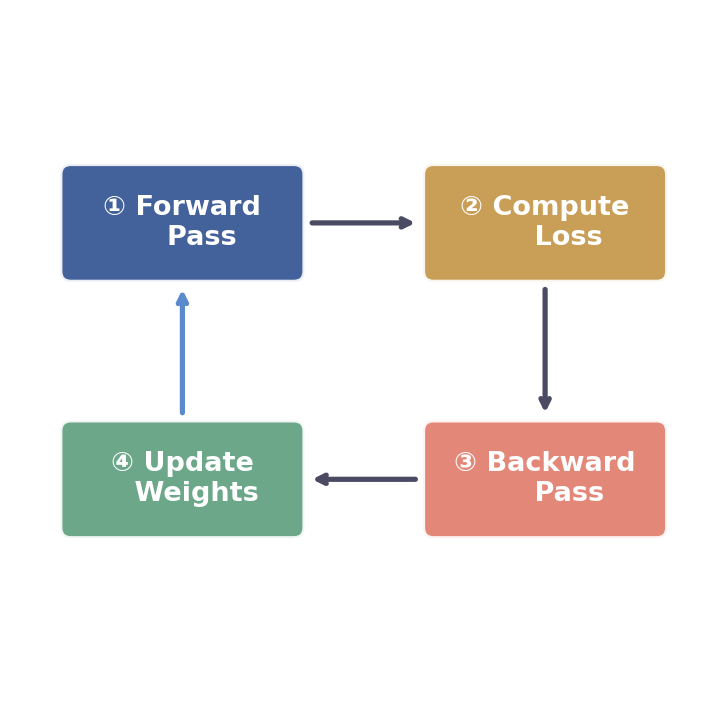
A loss function is a "wrongness meter" — it takes the prediction and the true target and outputs a single number measuring how far off you are. The network's entire goal is to minimize this number.
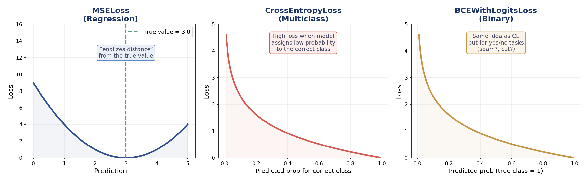
"How far off?"
$$L = \frac{1}{n}\sum_{i}(y_i - \hat{y}_i)^2$$
Regression — continuous values
"How confused?"
$$L = -\sum_{c} y_c \log(\hat{y}_c)$$
Multiclass — cat vs dog vs bird
"Yes or no?"
$$L = -[y\log(\hat{y}) + (1-y)\log(1-\hat{y})]$$
Binary — spam/not, fraud/not
The gradient tells you which direction increases the loss. You step in the opposite direction to reduce it. Repeat until the loss is minimized.
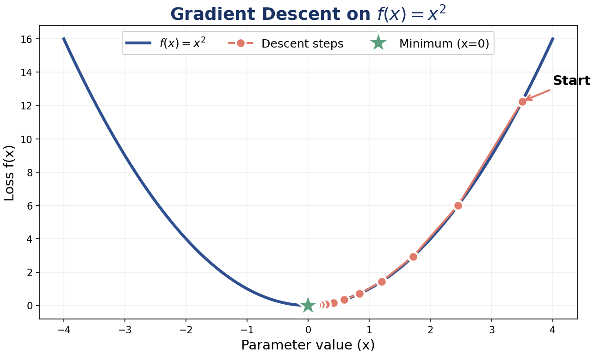
The learning rate controls how big each step is during gradient descent.
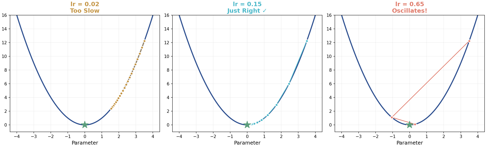
0.001 when using the Adam optimizer.
The framework that makes neural networks practical
PyTorch is not just "another array library." It's a complete toolkit for building and training neural networks.
Multi-dimensional arrays that run on GPU
Automatic gradient computation — no manual calculus
Pre-built layers: Linear, Conv2d, ReLU, Dropout, BatchNorm
Optimizers: SGD, Adam, AdamW, learning rate schedulers
Dataset and DataLoader for batching, shuffling, parallel loading
Image datasets (MNIST, CIFAR), transforms, pretrained models (ResNet)
Think of PyTorch as "NumPy with deep learning superpowers." The API feels familiar, but PyTorch adds the three things you need for neural networks.
| Feature | NumPy | PyTorch |
|---|---|---|
| Data structure | ndarray | tensor |
| GPU support | No | Yes — .to("cuda") |
| Automatic gradients | Manual calculus | Autograd — .backward() |
| NN layers | No | nn.Module — Linear, Conv2d, etc. |
| Optimizers | No | torch.optim — SGD, Adam, etc. |
A tensor is the core data structure in PyTorch — a multi-dimensional array. Everything flows through tensors: inputs, weights, gradients, and predictions.
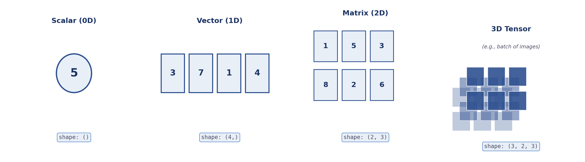
These operations appear in every PyTorch project. Fluency here prevents 90% of debugging later.
x = torch.tensor([1.0, 2.0, 3.0]) # create a tensor x.shape # torch.Size([3]) x.dtype # torch.float32 zeros = torch.zeros(3, 4) # 3×4 matrix of zeros ones = torch.ones(2, 3) # 2×3 matrix of ones rand = torch.randn(5, 5) # 5×5 from normal distribution
x = torch.randn(6) x.reshape(2, 3) # 6 → 2×3 x.view(2, 3) # same as reshape (requires contiguous memory) x.unsqueeze(0) # add batch dim: (6,) → (1, 6) x.squeeze() # remove size-1 dims A = torch.randn(3, 4) A[:, 0] # first column A[1, :] # second row
a = torch.tensor([1.0, 2.0, 3.0]) b = torch.tensor([4.0, 5.0, 6.0]) a + b # [5, 7, 9] — addition a * b # [4, 10, 18] — element-wise multiply a ** 2 # [1, 4, 9] — element-wise power
torch.dot(a, b) # 32.0 — dot product (1*4 + 2*5 + 3*6) m1 = torch.randn(2, 3) m2 = torch.randn(3, 4) m1 @ m2 # matrix multiply: (2,3) @ (3,4) → (2,4) m1.T # transpose: (2,3) → (3,2) m1.sum(dim=1) # sum along columns
@ is shorthand for torch.matmul(). Every nn.Linear layer is a matrix multiply + bias: $y = Wx + b$.
The first dimension is always the batch size — how many samples you process at once.
| Type | Shape | Example | Meaning |
|---|---|---|---|
| Tabular | (batch, features) | (32, 10) | 32 samples, 10 features each |
| Image | (batch, C, H, W) | (32, 3, 224, 224) | 32 RGB images, 224×224 pixels |
| Text | (batch, seq_len, embed) | (16, 128, 768) | 16 sentences, 128 tokens, 768-dim embeddings |
| Single sample | (1, features) | (1, 10) | Use unsqueeze(0) to add batch dim |
(batch, 10) but you pass (10,) → error. Always check .shape and use unsqueeze, reshape, or view to fix.
import torch x = torch.tensor(2.0, requires_grad=True) # track operations on this tensor y = x**2 # define function y = x² y.backward() # walk the computation graph in reverse → compute all gradients print(x.grad) # tensor(4.) — dy/dx = 2x = 4 ✓
requires_grad=True tells PyTorch to record every operation on this tensor, building a computation graph. When you call .backward(), PyTorch walks this graph in reverse to compute all gradients — that's backpropagation.
Stack layers in order — data flows through each one top to bottom. The quickest way to build a simple model.
import torch.nn as nn model = nn.Sequential( nn.Linear(10, 32), # 10 inputs → 32 hidden nn.ReLU(), # activation function nn.Linear(32, 1), # 32 hidden → 1 output ) x = torch.randn(4, 10) # batch of 4, 10 features each out = model(x) # shape: (4, 1)
The training loop from Part 2 — here's exactly how you write it in PyTorch:
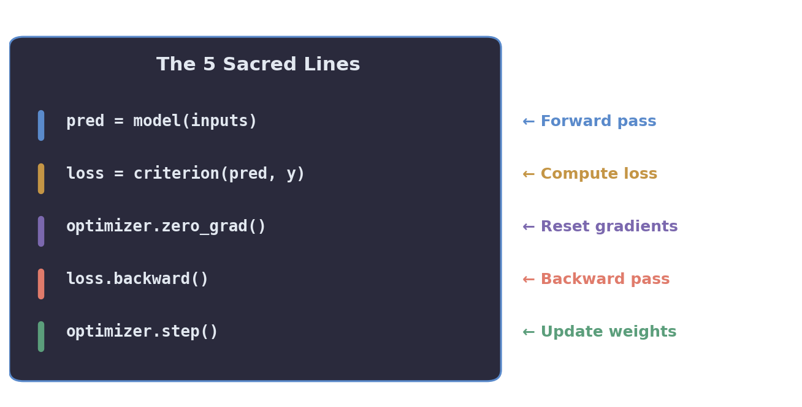
Neural networks are layered functions that learn input-output mappings from data
Each neuron computes: weighted sum + bias + activation function
MSE for regression, CrossEntropy for multiclass, BCE for binary — pick the right one for the task
Forward pass → loss → backprop → update weights. This cycle is how every network learns.
Autograd computes gradients, GPU accelerates math, nn.Module organizes layers
Hyperparameters (learning rate, layers, batch size) are YOUR decisions; parameters are learned